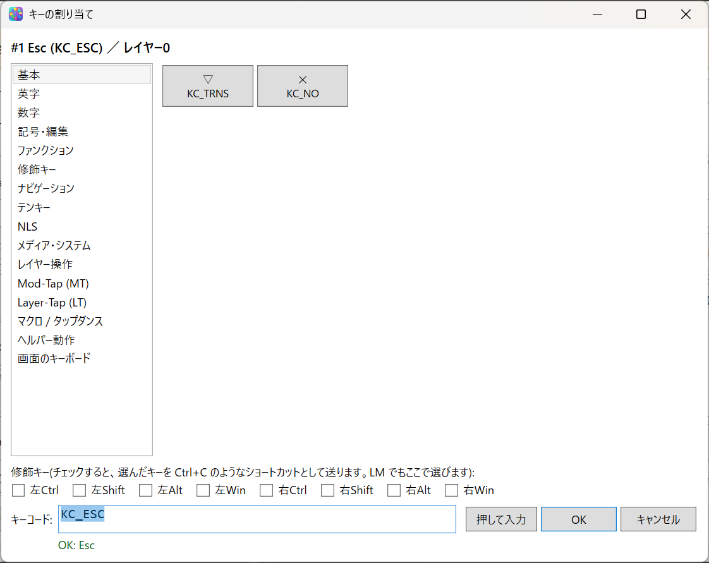
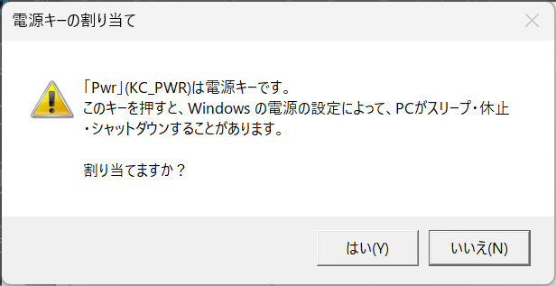
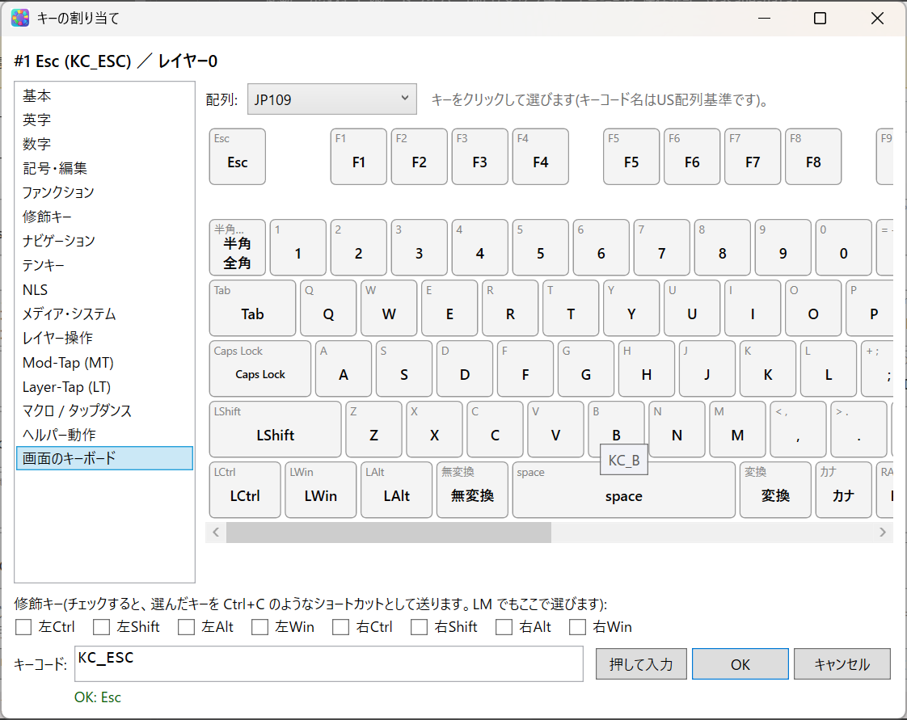
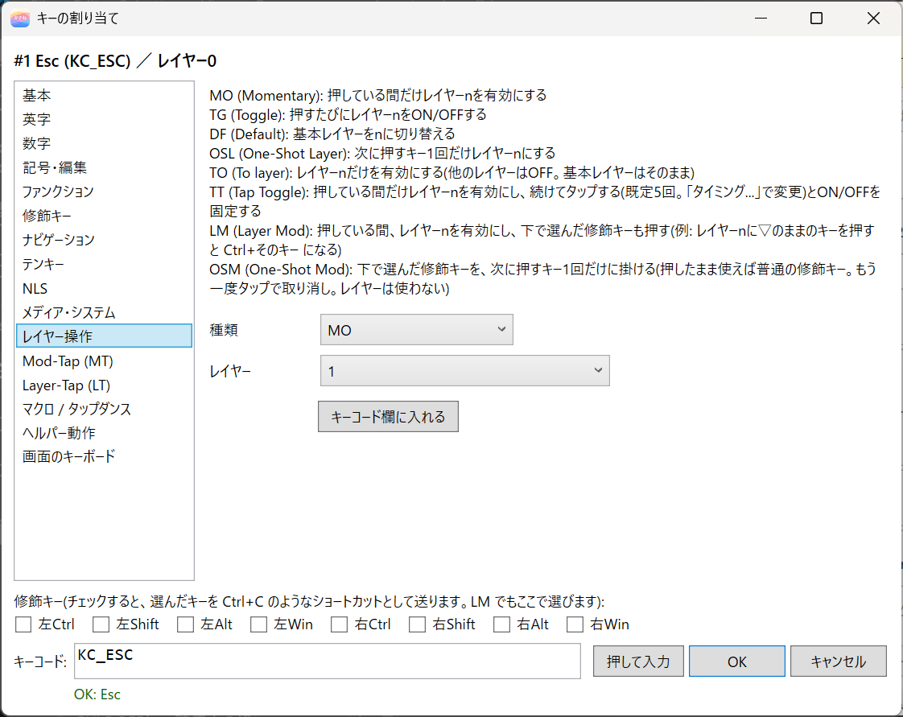
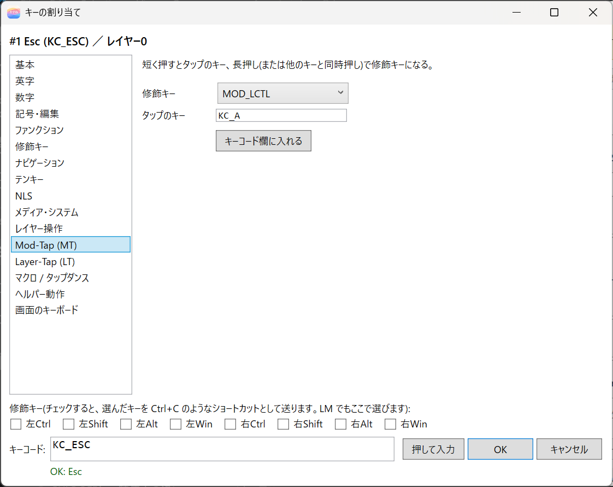

8. キーの割り当て
エディタのキー図でキーをクリックすると、「キーの割り当て」の画面が開きます。ここで、そのキーに割り当てる動作を選びます。

画面は、次の部分でできています。
| 部分 | 内容 |
|---|---|
| 左の一覧 | 動作のカテゴリ |
| 右の領域 | 選んだカテゴリのキー、または設定の欄。上の見出しに、割り当てるキーとレイヤー（例: #1 Esc (KC_ESC) ／ レイヤー0）が出る |
| 修飾キーのチェックボックス | 左右の Ctrl、Shift、Alt、Win。チェックを付けてからキーを選ぶと、ショートカットになる |
| キーコード欄 | 選んだ動作の名前（Consolas の文字）。直接書き換えられる |
| 押して入力 | 次に押したキーのキーコードを入れる（Esc で取消） |
| メッセージ欄 | 入力が正しいかどうかの表示（例: OK: Esc） |
| OK、キャンセル | 割り当てて閉じる、割り当てずに閉じる |
別のキーをクリックすると、開いている画面が前面に出ます。キーの割り当ての画面は、マクロなどの編集画面を開いたまま使えます。
カテゴリ
| カテゴリ | 内容 |
|---|---|
| 基本 | 透過（KC_TRNS、▽）、何もしない（KC_NO） |
| 英字、数字 | A〜Z、0〜9 |
| 記号・編集 | Esc、Tab、Enter、BS、Space、Caps、記号のキー |
| ファンクション | F1〜F24 |
| 修飾キー | 左右の Ctrl、Shift、Alt、Win、アプリケーションキー |
| ナビゲーション | PrintScreen、Pause、Insert、Home、End、PgUp、PgDn、矢印、Delete |
| テンキー | NumLock、テンキーの数字と記号 |
| NLS | 半角/全角、ろ、かな、¥、変換、無変換（日本語キーボードのキー）、IME オン、IME オフ |
| メディア・システム | 音量、再生、電卓、ブラウザーのキー、メール、スリープ、電源 |
| レイヤー操作 | MO、TG、DF、OSL、TO、TT、LM、OSM |
| Mod-Tap (MT) | 短く押すとキー、長押しすると修飾キー |
| Layer-Tap (LT) | 短く押すとキー、長押しするとレイヤー |
| マクロ / タップダンス | MACRO(n)、TAPDANCE(n) |
| ヘルパー動作 | HLP(id) |
| 画面のキーボード | 画面上のキー図から選ぶ |
F13〜F24 や、NLS のキー、ブラウザーのキーなど、使っているキーボードに物理キーがないものも、出力としては割り当てられます。たとえば、US 配列のキーに「変換」を割り当てられます。
NLS の IMEオン と IMEオフ（KC_LNG1、KC_LNG2）は、押すたびに入れ替わる半角/全角と違い、IME を ON か OFF のどちらかにします。Mac の「かな」「英数」キーと同じ使い方です。日本語キーボードの配列で使えます。QMK の名前（KC_LANG1、KC_LANG2、KC_HAEN、KC_HANJ）でも書けます。
一覧にないキーは、キーコード欄に SC_XXXX と直接書けます。XXXX は 16 進 4 桁のスキャンコードです（上位 2 桁は 00、E0、E1 のいずれか。下位 2 桁は 00 以外）。たとえば、ブラウザーの「戻る」は SC_E06A です。
電源キー
スリープ、電源、ウェイクアップのキーは、割り当てるときに確認が出ます。押すとパソコンがスリープやシャットダウンすることがあるためです。キートップにも ⚠ が付きます。

修飾キーを付けたキー
Ctrl+C のようなショートカットを割り当てるときの方法です。画面の下の修飾キーのチェックボックスにチェックを付けてから、キーを選びます。たとえば、左 Ctrl にチェックを付けて C を選ぶと、LCTL(KC_C)（Ctrl+C）になります。キー図の上では ^C のように表示されます。
キーコード欄に、LCTL(LSFT(KC_T)) のように直接書いてもかまいません。
押したまま次のキーを押しても、足した修飾キーは次のキーには掛かりません。たとえば、「!」を打つキーの直後の「a」は、「a」のままです。
押して入力
押して入力 を押したあとに、入力したいキーを押すと、そのキーのキーコードが入ります。Esc で取り消せます。
左右の修飾キーや、テンキーの Enter、日本語のキー（無変換、変換など）は、区別して入ります。Win キーや Alt+Tab のように、Windows が先に処理するキーは取れません。その場合は、画面のキーボード か一覧から選んでください。
画面のキーボードから選ぶ
左の一覧の末尾の 画面のキーボード を選ぶと、画面上のキー図から選べます。修飾キーにチェックを付けると、LCTL(KC_C) のような形になります。

レイヤー操作
レイヤー操作 を選ぶと、種類 と レイヤー を選ぶ欄が出ます。選んだら、キーコード欄に入れる を押すと、MO(1) のような形でキーコード欄に入ります。

| 動作 | 内容 |
|---|---|
MO(n) |
押している間だけ、レイヤー n を有効にする |
TG(n) |
押すたびに、レイヤー n の有効と無効を切り替える |
DF(n) |
基本になるレイヤーを n に切り替える |
OSL(n) |
次に押すキー 1 回だけ、レイヤー n にする |
TO(n) |
レイヤー n だけを有効にする（ほかのレイヤーは無効） |
TT(n) |
押している間はレイヤー n。続けて何回かタップすると、有効のまま固定する |
LM(n,mod) |
押している間、レイヤー n を有効にして、修飾キーも押した状態にする |
OSM(mod) |
次に押すキー 1 回だけ、修飾キーを掛ける |
LM、OSMの修飾キーは、画面下のチェックボックスで選びます。TT(n)の固定に必要なタップ回数は、既定で 5 回です。回数は、設定ダイアログの「タイミング」タブで変えられます（13. 設定ダイアログ）。OSMは、そのキーを短く押して離すと、次に押すキー 1 回だけに修飾キーが掛かります。たとえば、Shift のOSMのあとにaで、「A」になります。待っている間にもう一度タップすると、取り消されます。押したまま使えば、普通の修飾キーです。LM(1,MOD_LCTL)を押したまま、レイヤー 1 で ▽ のままのCを押すと、Ctrl+C になります。
レイヤーを追加する
エディタの ＋ 追加 でレイヤーを増やします。レイヤー 1 以降は、最初はすべてのキーが ▽（透過）です。▽ は、下のレイヤーと同じ動作を使う、という意味です。
Mod-Tap と Layer-Tap
短く押したときと、長押ししたときで、動作を変えます。左の一覧の Mod-Tap (MT) と Layer-Tap (LT) で設定します。
| 動作 | 短く押す | 長押し |
|---|---|---|
Mod-Tap（MT(mod,kc)） |
kc |
修飾キー（mod） |
Layer-Tap（LT(n,kc)） |
kc |
レイヤー n を有効にする |

- 押している間に別のキーを押すと、長押しとして扱われます。そのキーは、切り替わった後のレイヤーの割り当てで入力されます。たとえば、
LT(1,KC_SPC)を押しながらJを押すと、レイヤー 1 のJの位置のキーになります。 - 短く押した直後に、もう一度押し続けると、短く押したときのキーのリピートになります。スペースの連打や長押しができます。
- 判定の時間や方式は、設定ダイアログの「タイミング」タブで変えられます。速く打つと、Mod-Tap が意図せず長押しになるときは、判定方式を変えてみてください。
マクロ、タップダンス、ヘルパー動作
- マクロ / タップダンス:
MACRO(n)とTAPDANCE(n)を割り当てます。種類を選び、番号を入れます。番号の横の マクロ...（種類がTAPDANCEのときは タップダンス...）を押すと、一覧から選べます。中身の作り方は、9. マクロ・コンボ・タップダンス・キー置換を見てください。 - ヘルパー動作: キーを押すと、トレイがプログラムの起動などを実行します。選んだ動作を割り当てる で割り当てるか、新しい動作... で作ります。詳しくは、11. ヘルパー動作とアプリ別レイヤーを見てください。
キーワード一覧
割り当ての欄や、マクロ、コンボなどに書く短い名前の一覧です。多くは QMK Firmware と同じ名前です。n はレイヤー番号、kc はキーコードです。
| キーワード | 意味 |
|---|---|
MO(n)、TG(n)、DF(n)、OSL(n)、TO(n)、TT(n) |
レイヤーの操作（上の表） |
LM(n,mod) |
押している間、レイヤー n を有効にして、修飾キーも押した状態にする |
OSM(mod) |
次に押すキー 1 回だけ、修飾キーを掛ける |
MT(mod,kc) |
短く押すと kc、長押しすると修飾キー |
LT(n,kc) |
短く押すと kc、長押しするとレイヤー n |
MACRO(n) |
マクロ n を実行する。キー置換、コンボ、タップダンスの出力にも使える |
TAPDANCE(n) |
タップの回数や長押しで動作を変える、タップダンス n を実行する |
HLP(id) |
キー自体は何も出さず、トレイが動作を実行する（kasane 独自） |
LCTL(kc)、LSFT(kc)、LALT(kc)、LGUI(kc) |
左の修飾キーを押しながら kc を押す。右は RCTL などで同様 |
MOD_LCTL、MOD_LSFT、MOD_LALT、MOD_LGUI |
修飾キーの名前（LM、MT、OSM、キー置換の条件で使う）。右は MOD_RCTL など |
KC_xxx |
普通のキー（KC_A、KC_F1、KC_ENTER など） |
KC_TRNS |
透過（▽）。下のレイヤーの割り当てを使う |
KC_NO |
何もしないキー |
SC_xxxx |
スキャンコードを 16 進数で直接指定する（名前のないキー用） |
例: F13 やブラウザーの「戻る」を割り当てる
- 割り当てたいキーをクリックします。
- 左の一覧から ファンクション を選び、
F13を押します。ブラウザーの「戻る」なら、メディア・システム から選びます。 - OK を押して、キーボードに適用(ON) を押します。
F13〜F24 は、ほかのツールや、ヘルパー動作のトリガーに使うと便利です。ただし、F24 は kasane が内部で使うことがあります（11. ヘルパー動作とアプリ別レイヤー）。